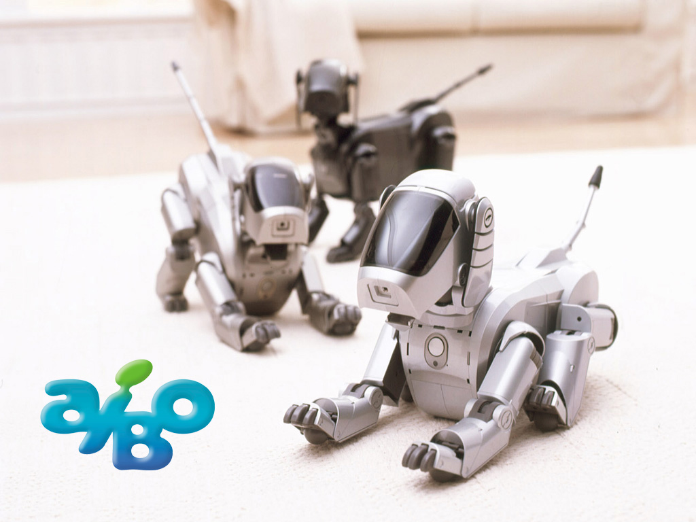
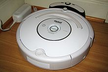
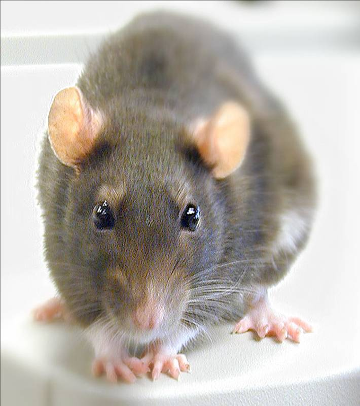
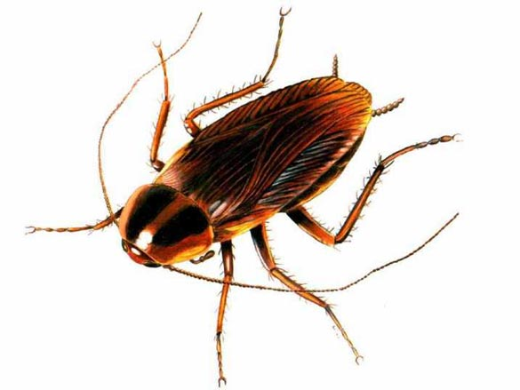
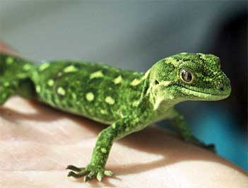
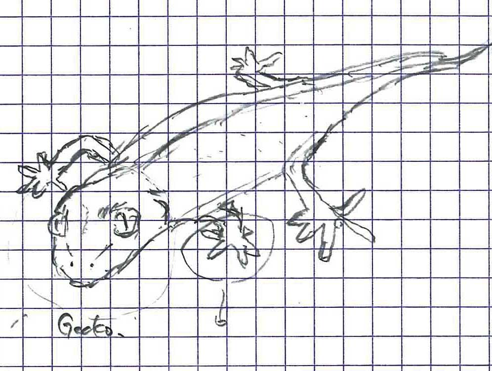
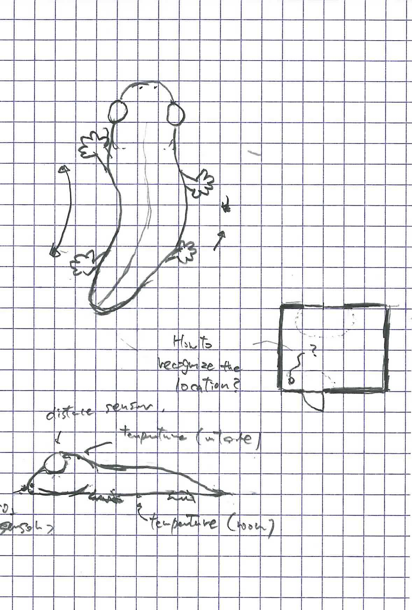

Kousuke Kikuchi
Fab Academy Participant and PhD Candidate
Week 1: Principles and Practices, Project management
Sorry, no time to write about principle and practices, and project management.
Homework: Final Project
Recently, the climate change has occurred due to the increase of CO2. For example near my area, Hino-shi, there has been a alter of temperature. It is hotter in summer (around 38 degrees Celsius at most, equivalent to about 100 degrees Fahrenheit)and colder in winter season (around -7 degrees Celsius, 19 degrees Fahrenheit) than few years ago.
Nowadays, to modify the stress came from the temperature, we basically turn on the airconditioner. However, the energy related to airconditioning is estimated to 1/4 of all energy consumption. In my point of view, we should find the cooler place in house to decrease or halt the use of airconditioner. Hence, we must find comfortable place without airconditioner.
As I thought of way to discover the proper place, I remembered the comic, named "Animal Doctor (動物のお医者さん)."
This Siberian-husky-dog, Chobby (チョビ) , had tried cool place based on his intuition. Because Siberian husky lives in Siberia, much chillier area than Japan, he hated the hot climate (but milder climate than the main island of Japan.) As a result, he had tried to find cool place by strolling around house or room. After the trait of Chobby was found by Dr.Hishinuma, one of the characters in this comic, she could find the cool place based on the Chobby's activity (sorry, I cannot find the picture of its scene).
Based on the episode of this comic, I would like to make a robot which can find the coolest place in house or room. Maybe good examples of robots are AIBO and Rumba. AIBO was the pet robot with artificial intelligence, having similar appearance with animals such as dog, lion, cat etc. On the other hand, Rumba is cleaning robot whose form does not resemble to animals, disc-shaped and thick robot.
 
In relation to the function, design of robot's appearance shall be related to the habitat of the animal. In other word, I should select the architype of robot from the animal which lives in our house.

Rat, shape is good and someone say cute, but harmful animal to human.

Cockroach, never! grotesque appearance without any pros!

Gecko is one of the prevalent reptiles in Japan which is called Yamori (家守) . And Chinese character of Yamori is divided into two: 家 (house) and 守 (to guard). As the name proudly tells us, gecko is guardian deity of house. Although the form of Gecko might be difficult to make into the machine, its meaning is arresting me.
So, I decided to make a gecko-like robot which can notify us the comfortable place in our house.

Sketch of Gecko. There are 5 fingers in 4 legs. Deforming the shape of gecko is required to make it more adorable.

Diagram of gecko-like robot. Based on 2 thermal sensors and CO2 sensor at nose, it might calculate comfortableness in a room. But, how to determine the location in a room is a problem.